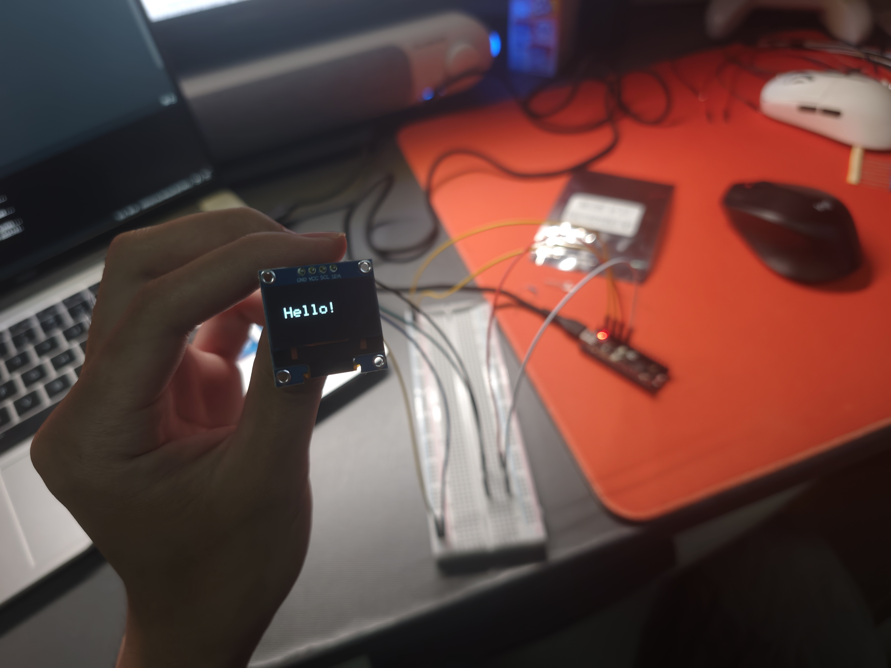

本项目设计并实现了一款基于 ESP32-S3 的物联网多功能信息面板。 设备通过 WiFi 连接互联网自动获取网络时间（NTP 协议）， 在 0.96 英寸 OLED 屏幕上循环显示四个信息页面， 并支持局域网内浏览器远程推送文字到屏幕。 作品融合了嵌入式计算、电子焊接和 3D 打印技术， 可独立供电运行，具备实用性与展示性。
| 页面 | 名称 | 显示内容 |
|---|---|---|
| 1 | 实时时钟 | 年-月-日 星期 / 时:分:秒（大字显示，冒号闪烁） |
| 2 | 日期详情 | 月份英文名 + 日期 / 完整星期 / 当年第几天 |
| 3 | 局域网消息 | 当前连接 SSID / 设备 IP 地址 / 信号强度 / MAC 地址 |
| 4 | 局域网显示文字功能 | 接收同一 WiFi 下浏览器发送的文字并实时显示 |
通信协议:
| 协议 | 用途 | 技术细节 |
|---|---|---|
| I2C | 微控制器与 OLED 之间的数据传输 | 两线制（SDA/SCL），速率 100kHz，7位地址寻址 |
| WiFi 802.11 b/g/n | 连接互联网与局域网通信 | 仅支持 2.4GHz 频段，通过路由器 DHCP 获取 IP |
| NTP | 网络时间同步 | 基于 UDP 协议，同步至阿里云 NTP 服务器（ntp.aliyun.com），时区 UTC+8 |
| HTTP | 局域网浏览器远程控制 | ESP32 作为 HTTP Server（端口 80），响应 GET 请求，返回 HTML 或处理文字 |
核心依赖库
| 库名称 | 功能 |
|---|---|
| Wire.h | I2C 通信底层驱动 |
| Adafruit_SSD1306 | OLED 屏幕初始化与基本操作 |
| Adafruit_GFX | 图形绘制（文字、线条、像素） |
| WiFi.h | WiFi 连接管理 |
| NTPClient.h | NTP 时间同步客户端 |
| WebServer.h | 轻量级 HTTP 服务器 |
本项目所需元件清单：
本项目开发环境：
配置开发板选择 ESP32S3 Dev Module
安装工程所需库：Adafruit_SSD1306···
代码展示

连接 2.4GHz WiFi（ESP32 不支持 5GHz）
配置 NTP 服务器为 ntp.aliyun.com，时区 UTC+8
代码展示
设计页面布局：每页顶部标题 + 分隔线 + 正文内容 + 底部页面指示器
编写 drawFullClock()：年月日星期 + 大号时:分 + 秒数闪烁冒号
编写 drawDateInfo()：英文月份 + 完整星期 + 年内第几天
编写 drawWiFiInfo()：SSID、IP、信号强度条、MAC 地址
编写 drawWebText()：接收局域网文字并智能排版
页面指示器格式：[1/4]、[2/4]、[3/4]、[4/4]
本项目是一次从软件到硬件、从代码到实物的全栈嵌入式开发实践。 它让我深刻体会到：一块几厘米的单片机，加上网络通信能力和结构设计， 就能做出一个完整、实用、可交互的产品。 过程中的每一次调试、每一次报错，都是对工程思维的锤炼。 这次经历不仅完成了课程要求，更激发了我对物联网开发的浓厚兴趣。
返回首页